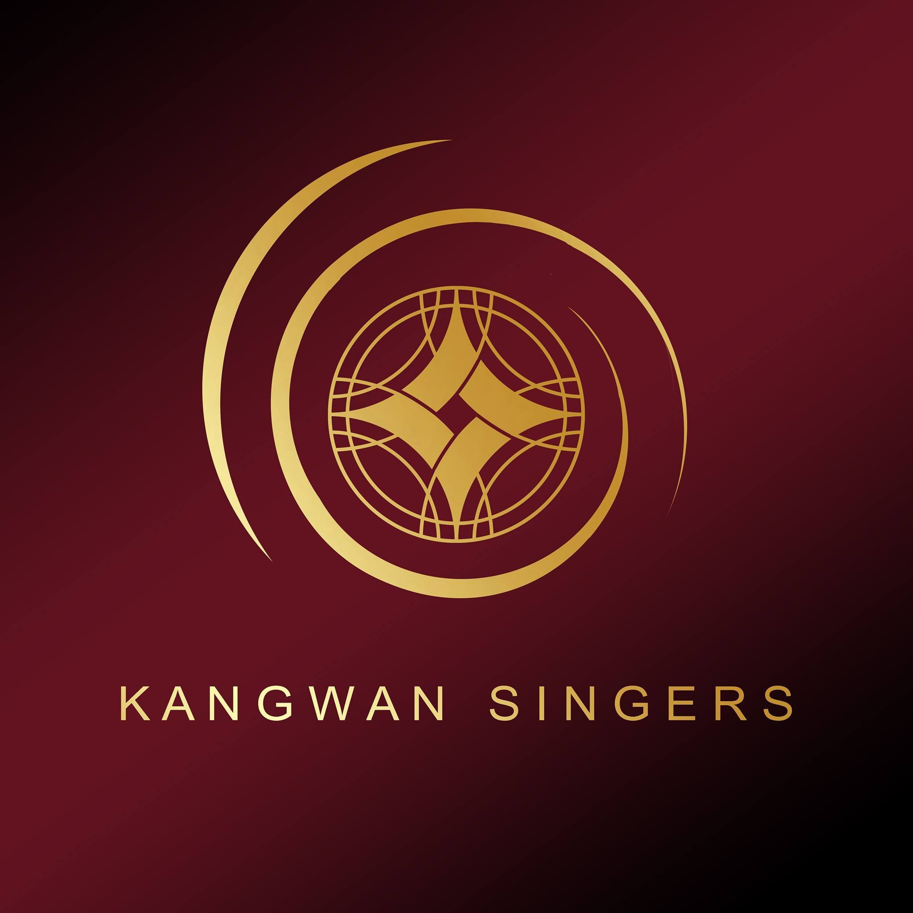

Post-Concert Meeting No. 5 · 5 June 2026
Hope · Hurt · Heal
Audience Feedback Analysis
Kangwan Singers · 68 responses
Agenda
Post-Concert Meeting No. 5
§ 1.1
Audience Feedback & Evaluation
Ratings · Songs · Expectations · Genre Preferences
§ 1.2
Reflections on Performance
What the audience loved · Messages to members
§ 1.3
Lessons Learned
Areas for improvement · Future wishes · Audience profile
§ 1.1
Audience Feedback & Evaluation
Ratings · Songs · Expectations · Genre Preferences
§ 1.1 — Audience Ratings
Ratings (out of 5) — 68 responses
| Dimension | Average |
|---|
| Value for Money | 4.85 |
| Overall Impression | 4.75 |
| Vocal Quality | 4.66 |
| Emotional Delivery | 4.63 |
| Song Order & MC Flow | 4.60 |
| Venue | 4.50 |
Venue is the lowest-rated dimension and the most consistently raised concern in open-text responses.
§ 1.1 — Audience Ratings
Ratings by Attendance History
| Dimension |
First time (n=37) |
2nd time (n=22) |
3+ times (n=9) |
| Overall Impression | 4.86 | 4.68 | 4.44 |
| Vocal Quality | 4.84 | 4.45 | 4.44 |
| Emotional Delivery | 4.84 | 4.41 | 4.33 |
| Song Order & MC Flow | 4.65 | 4.50 | 4.67 |
| Venue | 4.57 | 4.41 | 4.44 |
| Value for Money | 4.84 | 4.86 | 4.89 |
First-timers rate almost everything highest. Loyal fans (3+) are the toughest critics on most dimensions but rate Value for Money highest — committed but demanding. Emotional delivery drops the most across repeat visits.
§ 1.1 — Audience Ratings
Ratings by Choir Background
| Dimension |
Choir Singers (n=33) |
Non-Singers (n=35) |
| Overall Impression | 4.64 | 4.86 |
| Vocal Quality | 4.64 | 4.69 |
| Emotional Delivery | 4.58 | 4.69 |
| Song Order & MC Flow | 4.45 | 4.74 |
| Venue | 4.39 | 4.60 |
| Value for Money | 4.85 | 4.86 |
Non-singers rate every dimension higher. The biggest gap is Song Order & MC (0.29) — choir singers notice structural and pacing issues that non-singers don't. Vocal Quality has the smallest gap — singers appreciate craft even while critiquing it.
§ 1.1 — Favourite Songs (Q11)
Favourite Songs — Overall Ranking
| Rank | Song |
Votes | % |
| 1 | ชีวิตลิขิตเอง | 17 | 25% |
| 2 | ยื้อ | 11 | 16% |
| 3 | Zoo | 9 | 13% |
| 4 | A Dream is a Wish Your Heart Makes | 7 | 10% |
| 4 | Lesbia Mi Dicit Semper Male | 7 | 10% |
| 4 | Into the New World | 7 | 10% |
| 7 | เจ้านายคะ | 4 | 6% |
| 7 | Until Love is Spoken | 4 | 6% |
| 9 | Lux Aeterna | 1 | 1% |
| 9 | Till There Was You | 1 | 1% |
§ 1.1 — Favourite Songs (Q11)
Favourite Songs by Attendance History
| Song |
First time (n=37) |
2nd time (n=22) |
3+ times (n=9) |
| ชีวิตลิขิตเอง | 9 (24%) | 6 (27%) | 2 (22%) |
| ยื้อ | 6 (16%) | 3 (14%) | 2 (22%) |
| Zoo | 5 (14%) | 3 (14%) | 1 (11%) |
| A Dream is a Wish Your Heart Makes | 3 (8%) | 4 (18%) | 0 |
| Lesbia Mi Dicit Semper Male | 3 (8%) | 3 (14%) | 1 (11%) |
| Into the New World | 3 (8%) | 3 (14%) | 1 (11%) |
| เจ้านายคะ | 4 (11%) | 0 | 0 |
| Until Love is Spoken | 3 (8%) | 0 | 1 (11%) |
| Lux Aeterna | 1 (3%) | 0 | 0 |
| Till There Was You | 0 | 0 | 1 (11%) |
ชีวิตลิขิตเอง is consistently top (~22–27%). เจ้านายคะ is exclusively a first-timer favourite (11%) — returning audiences gave it zero votes despite it dominating Most Impressive Performance.
§ 1.1 — Favourite Songs (Q11)
Favourite Songs by Choir Background
| Song |
Choir Singers (n=33) |
Non-Singers (n=35) |
| ชีวิตลิขิตเอง | 6 (18%) | 11 (31%) |
| ยื้อ | 6 (18%) | 5 (14%) |
| Zoo | 4 (12%) | 5 (14%) |
| A Dream is a Wish Your Heart Makes | 4 (12%) | 3 (9%) |
| Lesbia Mi Dicit Semper Male | 4 (12%) | 3 (9%) |
| Into the New World | 4 (12%) | 3 (9%) |
| เจ้านายคะ | 3 (9%) | 1 (3%) |
| Until Love is Spoken | 1 (3%) | 3 (9%) |
| Lux Aeterna | 0 | 1 (3%) |
| Till There Was You | 1 (3%) | 0 |
ชีวิตลิขิตเอง is far more dominant with non-singers (31% vs 18%). Choir singers spread votes broadly across technically varied pieces. เจ้านายคะ is 3× more popular among singers (9% vs 3%).
§ 1.1 — Most Impressive Performance (Q12)
Most Impressive Performance — Overall
| Rank | Song |
Votes | % |
| 1 | เจ้านายคะ | 25 | 37% |
| 2 | Zoo | 18 | 26% |
| 3 | Into the New World | 16 | 24% |
| 4 | ชีวิตลิขิตเอง | 4 | 6% |
| 5 | Till There Was You | 2 | 3% |
| 5 | Lesbia Mi Dicit Semper Male | 2 | 3% |
| 7 | Lux Aeterna | 1 | 1% |
เจ้านายคะ ranks 8th as a favourite song but 1st as most impressive. Audiences found it visually and emotionally spectacular even if it was not their personal top pick.
§ 1.1 — Most Impressive Performance (Q12)
Most Impressive Performance by Attendance History
| Song |
First time (n=37) |
2nd time (n=22) |
3+ times (n=9) |
| เจ้านายคะ | 12 (32%) | 7 (32%) | 6 (67%) |
| Zoo | 10 (27%) | 6 (27%) | 2 (22%) |
| Into the New World | 9 (24%) | 7 (32%) | 0 |
| ชีวิตลิขิตเอง | 3 (8%) | 1 (5%) | 0 |
| Till There Was You | 1 (3%) | 1 (5%) | 0 |
| Lesbia Mi Dicit Semper Male | 1 (3%) | 0 | 1 (11%) |
| Lux Aeterna | 1 (3%) | 0 | 0 |
เจ้านายคะ dominates with loyal fans (67%) — roughly double the rate of other groups. Into the New World earns zero votes from 3+ timers — its impact may rely on the surprise of hearing it for the first time.
§ 1.1 — Most Impressive Performance (Q12)
Most Impressive Performance by Choir Background
| Song |
Choir Singers (n=33) |
Non-Singers (n=35) |
| เจ้านายคะ | 12 (36%) | 13 (37%) |
| Zoo | 9 (27%) | 9 (26%) |
| Into the New World | 7 (21%) | 9 (26%) |
| ชีวิตลิขิตเอง | 2 (6%) | 2 (6%) |
| Till There Was You | 1 (3%) | 1 (3%) |
| Lesbia Mi Dicit Semper Male | 1 (3%) | 1 (3%) |
| Lux Aeterna | 1 (3%) | 0 |
Most Impressive Performance is the most evenly split question — choir background has almost no effect. Both groups rank เจ้านายคะ > Zoo > Into the New World identically.
§ 1.1 — Concert Expectations (Q13 — multi-select, max 3)
Top Concert Expectations
| Expectation |
Count | % of respondents |
| ความไพเราะของเสียงร้อง — Beautiful vocal harmony | 61 | 90% |
| การเล่าเรื่องผ่านบทเพลง — Storytelling through music | 39 | 57% |
| ความซาบซึ้งทางอารมณ์ — Emotional resonance | 35 | 51% |
| ความสนุกสนาน — Fun & enjoyment | 26 | 38% |
| การแสดงที่สร้างแรงบันดาลใจ — Inspirational performance | 25 | 37% |
| การเรียนรู้วัฒนธรรมและดนตรีใหม่ — Learning about music/culture | 12 | 18% |
| ความเป็นศิลปะร่วมสมัย — Contemporary art experience | 12 | 18% |
| การมีส่วนร่วมกับผู้แสดง — Audience-performer interaction | 4 | 6% |
§ 1.1 — Concert Expectations (Q13)
Concert Expectations by Attendance History
| Expectation |
First time (n=37) |
2nd time (n=22) |
3+ times (n=9) |
| Beautiful vocal harmony | 33 (89%) | 19 (86%) | 9 (100%) |
| Storytelling through music | 23 (62%) | 13 (59%) | 3 (33%) |
| Emotional resonance | 22 (59%) | 11 (50%) | 2 (22%) |
| Fun & enjoyment | 18 (49%) | 6 (27%) | 2 (22%) |
| Inspirational performance | 16 (43%) | 7 (32%) | 2 (22%) |
| Learning about music/culture | 7 (19%) | 2 (9%) | 3 (33%) |
| Contemporary art experience | 5 (14%) | 7 (32%) | 0 |
| Audience-performer interaction | 4 (11%) | 0 | 0 |
Vocal harmony is universally expected — 100% of loyal fans. Loyal fans expect far less storytelling (33%) and emotional resonance (22%) — they come primarily for vocal craft.
§ 1.1 — Concert Expectations (Q13)
Concert Expectations by Choir Background
| Expectation |
Choir Singers (n=33) |
Non-Singers (n=35) |
| Beautiful vocal harmony | 30 (91%) | 31 (89%) |
| Storytelling through music | 19 (58%) | 20 (57%) |
| Emotional resonance | 16 (48%) | 19 (54%) |
| Fun & enjoyment | 14 (42%) | 12 (34%) |
| Inspirational performance | 14 (42%) | 11 (31%) |
| Learning about music/culture | 4 (12%) | 8 (23%) |
| Contemporary art experience | 5 (15%) | 7 (20%) |
| Audience-performer interaction | 3 (9%) | 1 (3%) |
Vocal harmony and storytelling are virtually identical across groups. Singers expect more fun (42% vs 34%) and inspiration (42% vs 31%). Non-singers more likely to expect learning opportunities (23% vs 12%).
§ 1.1 — Music Genre Preferences (Q14 — multi-select)
Genre Preferences — Overall
| Genre |
Count | % of respondents |
| เพลงจากละครเวทีภาษาต่างประเทศ — Foreign Musical Theatre | 26 | 38% |
| เพลงตามยุคสมัยดนตรีตะวันตก — Western Classical | 26 | 38% |
| เพลงร่วมสมัย — Contemporary Music | 25 | 37% |
| เพลงสมัยนิยมภาษาต่างประเทศ — K-Pop / J-Pop | 23 | 34% |
| เพลงสมัยนิยมภาษาไทย — Thai Pop (T-Pop) | 22 | 32% |
| เพลงสมัยนิยมภาษาอังกฤษ — English Pop | 21 | 31% |
| เพลงจากภาพยนตร์หรือซีรี่ย์ไทย — Thai Film / Drama OST | 19 | 28% |
| เพลงจากละครเวทีภาษาไทย — Thai Musical Theatre | 19 | 28% |
| เพลงศักดิ์สิทธิ์ — Sacred Music | 18 | 26% |
| เพลงจากภาพยนตร์หรือซีรี่ย์ต่างประเทศ — Foreign Film / Drama OST | 18 | 26% |
| เพลงไทยแนวอื่น — Thai Folk (Luktung / Luk Grung) | 13 | 19% |
| เพลงพื้นบ้าน — Folklore | 12 | 18% |
§ 1.1 — Genre Preferences (Q14)
Genre Preferences by Attendance History
| Genre |
First time (n=37) |
2nd time (n=22) |
3+ times (n=9) |
| Foreign Musical Theatre | 14 (38%) | 8 (36%) | 4 (44%) |
| Western Classical | 12 (32%) | 9 (41%) | 5 (56%) |
| Contemporary Music | 13 (35%) | 6 (27%) | 6 (67%) |
| K-Pop / J-Pop | 12 (32%) | 8 (36%) | 3 (33%) |
| Thai Pop (T-Pop) | 11 (30%) | 7 (32%) | 4 (44%) |
| English Pop | 11 (30%) | 10 (45%) | 0 |
| Thai Film / Drama OST | 11 (30%) | 5 (23%) | 3 (33%) |
| Thai Musical Theatre | 10 (27%) | 5 (23%) | 4 (44%) |
| Sacred Music | 12 (32%) | 3 (14%) | 3 (33%) |
| Foreign Film / Drama OST | 11 (30%) | 7 (32%) | 0 |
| Thai Folk (Luktung / Luk Grung) | 4 (11%) | 8 (36%) | 1 (11%) |
| Folklore | 5 (14%) | 4 (18%) | 3 (33%) |
Loyal fans (3+) strongly favour Western Classical (56%) and Contemporary Music (67%). English Pop drops to 0% for loyal fans despite peaking at 45% for 2nd-timers.
§ 1.1 — Genre Preferences (Q14)
Genre Preferences by Choir Background
| Genre |
Choir Singers (n=33) |
Non-Singers (n=35) |
| Foreign Musical Theatre | 18 (55%) | 8 (23%) |
| Western Classical | 10 (30%) | 16 (46%) |
| Contemporary Music | 12 (36%) | 13 (37%) |
| K-Pop / J-Pop | 10 (30%) | 13 (37%) |
| Thai Pop (T-Pop) | 8 (24%) | 14 (40%) |
| English Pop | 11 (33%) | 10 (29%) |
| Thai Film / Drama OST | 11 (33%) | 8 (23%) |
| Thai Musical Theatre | 13 (39%) | 6 (17%) |
| Sacred Music | 11 (33%) | 7 (20%) |
| Foreign Film / Drama OST | 9 (27%) | 9 (26%) |
| Thai Folk (Luktung / Luk Grung) | 4 (12%) | 9 (26%) |
| Folklore | 7 (21%) | 5 (14%) |
Largest gap: Foreign Musical Theatre — singers 55% vs non-singers 23%. Non-singers strongly prefer Thai Pop (40% vs 24%) and Western Classical (46% vs 30%). Contemporary Music is virtually identical between groups.
§ 1.2
Reflections on Performance
What the audience loved most · Messages to members
§ 1.2 — What the Audience Loved Most (Q15)
What the Audience Loved Most
Vocal quality & beauty
"เพลงไพเราะ ผู้แสดงมีความตั้งใจทุ่มเท"
Dedication & passion
"เห็นความทุ่มเทของนักร้อง"
Diverse & accessible song program
"แนวเพลงที่หลากหลายกว่าเดิมมากขึ้น เพลงเข้าถึงคนทั่วไปได้มากขึ้น"
Emotional storytelling
"ประทับใจในนักร้องที่ดูอินกับการแสดงและมีความตั้งใจในการถ่ายทอดเรื่องราวผ่านบทเพลง"
Dance elements in Zoo
"เต้น!!! พีคมาก ไม่คาดคิด"
Unity & teamwork
"ความเป็นน้ำหนึ่งใจเดียวกันของทีม"
Program coherence with theme
"เนื้อเพลงถูกร้อยเรียงออกมาให้อยู่ในหมวดหมู่เดียวกัน"
§ 1.2 — What the Audience Loved Most (Q15)
What the Audience Loved by Attendance History
| Theme |
First time (22 resp) |
2nd time (18 resp) |
3+ times (8 resp) |
| Diverse / accessible repertoire | 2 | 6 | 3 |
| Vocal quality & beauty | 4 | 2 | 2 |
| Emotional delivery & dedication | 4 | 3 | 1 |
| Dance / choreography | 4 | 0 | 0 |
| Program coherence with theme | 3 | 2 | 2 |
| Arrangement boldness & quality | 0 | 2 | 0 |
| Performers' joy & energy | 1 | 2 | 1 |
| Unity & teamwork | 2 | 0 | 1 |
Dance is exclusively a first-timer highlight — no 2nd or 3+ timer mentioned it. 2nd-timers most excited by diverse / accessible repertoire (6 of 18 responses).
§ 1.2 — What the Audience Loved Most (Q15)
What the Audience Loved by Choir Background
| Theme |
Choir Singers (25 resp) |
Non-Singers (23 resp) |
| Dance / choreography | 4 | 1 |
| Vocal quality & beauty | 4 | 2 |
| Program coherence with theme | 4 | 2 |
| Dedication & emotional delivery | 3 | 5 |
| Diverse / accessible repertoire | 3 | 5 |
| Arrangement boldness & quality | 2 | 0 |
| Unity & teamwork | 1 | 2 |
Choir singers are the primary champions of dance and notice arrangement quality. Non-singers are driven more by emotional impact and dedication.
§ 1.2 — Messages to Members (Q18)
Messages to Members
"เก่งมากๆ" / "ดีมาก"
Appeared in the majority of responses — overwhelmingly warm and encouraging
"ขอให้วงเติบโต"
Audience wants to see the choir grow
"Really good singers"
First-time attendee expressing intent to return (English response)
"你们真厉害！"
Returning supporter — signs of diverse international reach (Chinese response)
Tone across all responses was overwhelmingly warm and encouraging. Multiple first-time attendees expressed intent to return.
§ 1.2 — Messages to Members (Q18)
Messages to Members by Attendance History
| Group | Tone | Notable Patterns |
| First time (19 resp) |
Enthusiastic, surprised |
Express intent to return; reference specific songs; some include emoji; one English response ("Really good singers") |
| 2nd time (17 resp) |
Warm, invested |
Mix of encouragement and embedded technical suggestions; one Chinese response (你们真厉害！); tone feels like a returning supporter |
| 3+ times (8 resp) |
Personal, familial |
Most affectionate tone; acknowledge discipline and sacrifice required; use insider language; express international ambitions for the choir |
Messages grow progressively warmer and more personal with each return visit. Loyal fans treat the choir like family — their messages read less like feedback and more like notes from friends.
§ 1.2 — Messages to Members (Q18)
Messages to Members by Choir Background
| Group | Tone | Notable Patterns |
| Choir Singers (22 resp) |
Collegial, specific |
Reference particular songs or technical moments; some express desire to join ("อยากมาร่วมงานด้วย"); encouragement with insider understanding |
| Non-Singers (22 resp) |
Moved, inspired |
Focus on emotional impact ("เติมไฟในใจ"); express wanting to come back; acknowledge dedication without technical vocabulary |
Choir singers write as peers who understand what it takes; non-singers write as audience members who were moved — both equally warm, but from different vantage points.
§ 1.3
Lessons Learned & Post-Concert Review
Areas for improvement · Future wishes · Audience profile
§ 1.3 — Areas for Improvement (Q16)
Areas for Improvement
1. Venue & Seating — ~10 mentions
"สถานที่ค่อนข้างเล็กและบัตรเต็มเร็ว" · "ที่นั่งน้อย จองยาก เต็มไวมาก" · "การจัดที่นั่งให้สลับให้เกิดช่องว่างจะได้ไม่บังกัน"
2. Vocal Balance & Technique — ~5 mentions
"balance บางท่อนของเพลง, ความกล้าของ soprano เวลาโผล่ออกมา" · "เพลงที่ 9 ควรเพิ่มเบส"
3. Show Duration & Flow — ~4 mentions
"เวลาแสดงน้อยไปหน่อย" · "ควรมีการกันแขกเดินเข้าออกระหว่างเพลง"
4. Song Flow & Program Direction — ~4 mentions
"การเลือกเพลงควรไล่ลำดับอารมณ์" · "the dance broken the flow of the music direction"
5. Storytelling & Narration — ~2 mentions
"การเล่าเรื่องเพิ่มอีกสักหน่อยครับ"
§ 1.3 — Areas for Improvement (Q16)
Areas for Improvement by Attendance History
| Theme |
First time (7 resp) |
2nd time (13 resp) |
3+ times (5 resp) |
| Venue size & ticket availability | 2 | 5 | 0 |
| Seating arrangement | 1 | 2 | 0 |
| Vocal quality / technique | 0 | 3 | 3 |
| Show duration (too short) | 1 | 1 | 0 |
| Song flow / program direction | 1 | 2 | 0 |
| Venue logistics (AC, food, signage) | 2 | 1 | 0 |
| Dance pacing | 0 | 1 | 0 |
| Guest movement between songs | 0 | 0 | 1 |
| Narration / storytelling | 1 | 0 | 0 |
Venue/seating dominates 2nd-timer feedback. 3+ timers focus almost entirely on vocal technique — the most demanding critics with the most specific feedback.
§ 1.3 — Areas for Improvement (Q16)
Areas for Improvement by Choir Background
| Theme |
Choir Singers (11 resp) |
Non-Singers (14 resp) |
| Vocal technique (harmonization, soprano, bass) | 4 | 2 |
| Venue size & ticket availability | 2 | 4 |
| Seating arrangement | 0 | 2 |
| Show duration | 1 | 1 |
| Song flow / program direction | 1 | 2 |
| Venue logistics (AC, food, signage) | 2 | 1 |
| Ensemble readiness | 1 | 0 |
| Guest movement between songs | 1 | 0 |
Vocal technique critique is concentrated among choir singers — they hear specific issues that non-singers notice only generally. Non-singers more focused on venue logistics and seating.
§ 1.3 — Future Wishes for Kangwan Singers (Q17)
Future Wishes — 38 of 68 respondents (56%)
1. Bigger ensemble / more members — most common wish
Choir singers want more voice-part balance; non-singers want to bring more people
2. Bigger venue or full production
Linked to ensemble growth — more members means a bigger stage is possible
3. International competition
Especially strong among loyal fans — one envisions performing at Lumphini Park for Thai and international audiences
4. Musical theatre repertoire
Strong across both singers and 2nd/3+ timers
5. Audience interaction
Want more two-way engagement during the show — sing-alongs, Q&A
6. Diverse / themed programming
"Disney night, T-Pop set, anime songs — Attack on Titan, Demon Slayer — guaranteed an audience"
§ 1.3 — Future Wishes (Q17)
Future Wishes by Attendance History
| Theme |
First time (16 resp) |
2nd time (14 resp) |
3+ times (8 resp) |
| Bigger ensemble / more members | 4 | 1 | 2 |
| Bigger venue / full production | 2 | 1 | 1 |
| Musical theatre repertoire | 1 | 2 | 1 |
| Specific genre additions | 1 | 3 | 0 |
| Theme / concept concerts | 2 | 1 | 0 |
| International competition | 0 | 1 | 3 |
| Audience interaction | 0 | 0 | 2 |
| More instruments / live band | 1 | 0 | 0 |
| More shows / keep going | 1 | 2 | 1 |
First-timers want scale — "make it bigger". Loyal fans (3+) are most ambitious: 3 of 8 mention international competition, 2 specifically want audience interaction built into future shows.
§ 1.3 — Future Wishes (Q17)
Future Wishes by Choir Background
| Theme |
Choir Singers (20 resp) |
Non-Singers (18 resp) |
| Bigger ensemble / more members | 5 | 3 |
| Musical theatre repertoire | 3 | 2 |
| Quality / technical improvement | 2 | 1 |
| Diverse / themed programming | 3 | 1 |
| International competition | 2 | 2 |
| Audience interaction | 1 | 1 |
| Accessible / popular songs | 1 | 2 |
| Bigger venue / full production | 1 | 2 |
| More shows / keep going | 1 | 2 |
Choir singers overwhelmingly want a bigger ensemble (5 of 20) — they understand directly how voice-part balance depends on headcount. Both groups share equal enthusiasm for international competition.
§ 1.3 — Audience Profile
Audience Profile — 68 responses
Attendance History
| Visit | Count | % |
| First time | 37 | 54% |
| 2nd time | 22 | 32% |
| 3rd or 4th time | 2 | 3% |
| 5+ times (loyal fans) | 7 | 10% |
More than half the audience was new — strong word-of-mouth reach this year.
Choir Background
| Background | Count | % |
| Choir singers | 33 | 49% |
| Non-singers | 35 | 51% |
Nearly half the audience are fellow choir singers — an engaged and discerning crowd who notice technical detail.